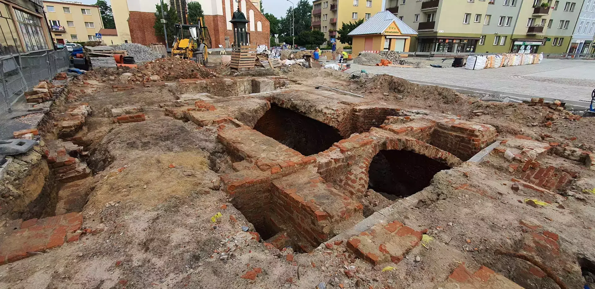
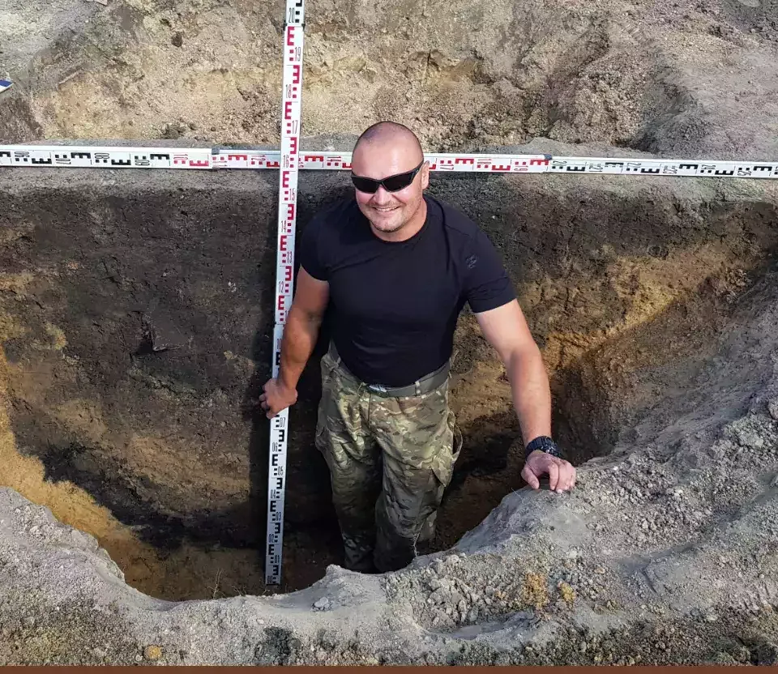
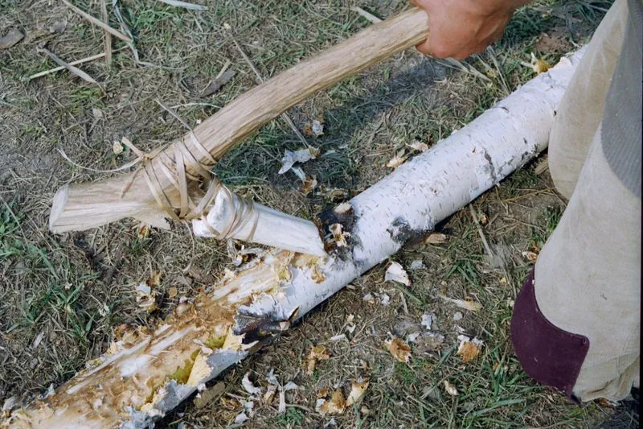
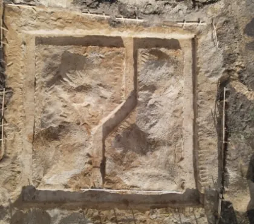
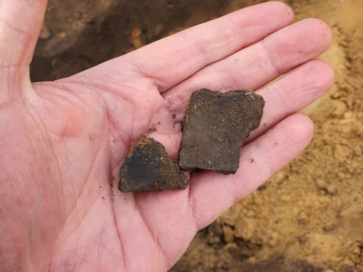
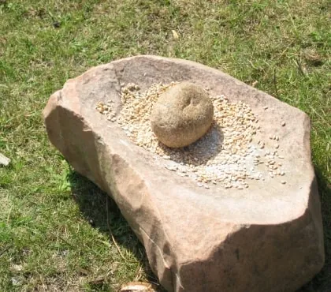
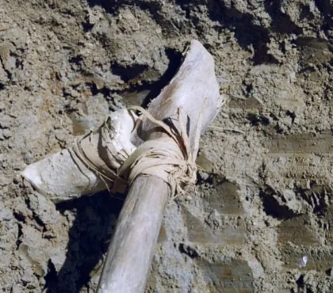
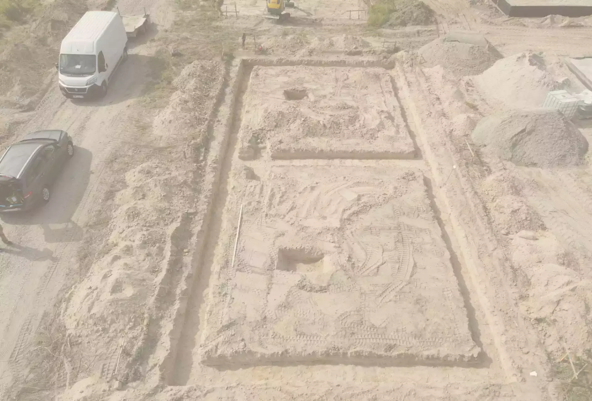

Od 2010 roku prowadzimy nadzory archeologiczne
Jesteśmy firmą archeologiczną z Dolnego Śląska. Prowadzimy nadzory i badania archeologiczne przy inwestycjach różnego typu.

Firma archeologiczna · od 2010 roku · Dolny Śląsk i Opolszczyzna
Odkrywamy historię zapisaną pod ziemią i pilnujemy, żeby budowa szła bez przestojów. Nadzór archeologiczny, badania, pozwolenia konserwatorskie i dokumentacja na Dolnym Śląsku i Opolszczyźnie.




O nas
Jesteśmy firmą archeologiczną z Dolnego Śląska. Prowadzimy nadzory i badania archeologiczne przy inwestycjach różnego typu.
Pośredniczymy przy uzyskaniu zezwoleń konserwatorskich. Nadzór archeologiczny prowadzimy dla dużych firm i klientów indywidualnych: przy budowach mieszkaniowych, przemysłowych i infrastrukturalnych.
Zabytki oglądamy pod mikroskopami stereoskopowymi, metalograficznymi, cyfrowymi i skaningowymi. Po zakończeniu prac opracowujemy cały materiał.
Od niemal 10 lat prowadzimy badania eksperymentalne związane z technologią obróbki kości i poroża. Każde doświadczenie przeprowadzamy kilkukrotnie.
Repliki wykonujemy własnoręcznie, narzędziami i technikami z danej epoki. Na lekcjach, warsztatach i pokazach można ich dotknąć.
Oferta

Nadzór archeologiczny w trakcie prac budowlanych: archeolog przy robotach ziemnych, obserwacja warstw w profilu i rzucie wykopu, dokumentacja opisowa i fotograficzna.
Czytaj więcej
Badania wyprzedzające i ratownicze wraz z dokumentacją reliktów i znalezisk. Zakres dopasowany do decyzji konserwatora zabytków i rodzaju gruntu.
Czytaj więcej
Lekcje, warsztaty, pokazy i festyny. Uczestnicy dotykają replik i sami próbują dawnych technik.
Czytaj więcej
Publikacje i analizy traseologiczne. Najedź na zdjęcie — zobacz, co widzi archeolog pod mikroskopem.
Czytaj więcej
Odtwarzamy dawne technologie krok po kroku, by zrozumieć funkcję i sposób wykonania zabytków.
Czytaj więcejWyroby z kości i poroża wykonywane ręcznie, narzędziami i technikami z danej epoki.
Czytaj więcejDla inwestora
Jak wygląda nadzór archeologiczny przy budowie? Zaczynamy od analizy dokumentów planistycznych, danych archiwalnych i skali robót ziemnych. Dokumentację prowadzimy równolegle z pracami terenowymi, a przy odkryciu reliktu reagujemy na miejscu.
Zanim ruszy budowa, sprawdzamy ewidencję, mapy, dane archiwalne i decyzje administracyjne. Wiesz, czy i w jakim zakresie potrzebny będzie nadzór archeologiczny.
Przygotowujemy wniosek i uzgodnienia konserwatorskie. Odciążamy inwestora w formalnościach związanych z uzyskaniem pozwolenia.
Archeolog jest przy robotach ziemnych. Obserwuje warstwy w profilu i rzucie wykopu, a odkrycia dokumentuje opisowo i fotograficznie.
Opracowujemy materiały, przygotowujemy raport i zajmujemy się konserwacją zabytków.
Nadzór archeologiczny prowadzi się w trakcie prac budowlanych w miejscach, w których mogą występować zabytki archeologiczne. Sprawdzamy to na etapie analizy działki.
Nadzoruje i dokumentuje prace oraz pilnuje, żeby żadne zabytki nie zostały zniszczone. Obserwuje warstwy ziemi w profilu i w rzucie wykopu, a dokumentację prowadzi w formie opisowej i fotograficznej.
Pomagamy inwestorowi w uzyskaniu pozwolenia na prace archeologiczne i odciążamy go w całym procesie administracyjnym.
Gdy podczas nadzoru odkrywamy pozostałości dawnego osadnictwa, prowadzimy badania ratownicze. Działamy sprawnie, w sposób niezagrażający inwestycji.
Kreator · 30 sekund

Rekonstrukcje, wystawy i pokazy — przeszłość, którą można zobaczyć z bliska.
Archeologia eksperymentalna
Od niemal 10 lat prowadzimy badania eksperymentalne związane z technologią obróbki kości i poroża. Każdy eksperyment poprzedza analiza pod mikroskopami stereoskopowymi, metalograficznymi, cyfrowymi i skaningowymi — a każde doświadczenie powtarzamy kilkukrotnie.
Pod mikroskopem — przesuń kursorem lub palcem


Repliki zabytków
Wszystkie repliki wykonujemy własnoręcznie, narzędziami i technikami z danej epoki — od epoki kamienia po czasy nowożytne. Sprawdź, czy rozpoznasz je bez podpisu.
Przeciągnij, żeby obrócić
Obróć replikę i zobacz z bliska, jak jest zbudowana.
Model poglądowy, zbudowany na podstawie zdjęcia repliki z naszej pracowni.
Edukacja archeologiczna
Z naszych wykopów

Kontakt
Nadzory archeologiczne prowadzimy przede wszystkim na terenie województwa dolnośląskiego i opolskiego, między innymi we Wrocławiu, Oławie i Świdnicy.